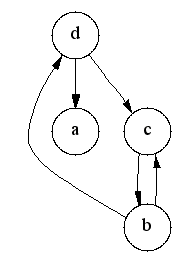
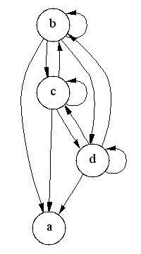

Transitive Closure
Computes the transitive closure of a directed graph, adding an edge (u,v) whenever there is a path from u to v.
Complexity: O(|V||E|)
Defined in: <boost/graph/transitive_closure.hpp>
Example
#include <iostream>
#include <boost/graph/adjacency_list.hpp>
#include <boost/graph/transitive_closure.hpp>
int main() {
using Graph = boost::adjacency_list<boost::vecS, boost::vecS, boost::directedS>;
Graph g;
boost::add_edge(0, 1, g);
boost::add_edge(1, 2, g);
boost::add_edge(2, 3, g);
Graph tc;
boost::transitive_closure(g, tc);
std::cout << "Transitive closure edges:\n";
for (auto ep = edges(tc); ep.first != ep.second; ++ep.first) {
std::cout << " " << source(*ep.first, tc) << " -> " << target(*ep.first, tc) << "\n";
}
}Expected output:
Transitive closure edges: 0 -> 1 0 -> 2 0 -> 3 1 -> 2 1 -> 3 2 -> 3
(1) Non-named parameter version
template <typename Graph, typename GraphTC,
typename G_to_TC_VertexMap, typename VertexIndexMap>
void transitive_closure(
const Graph& g, GraphTC& tc,
G_to_TC_VertexMap g_to_tc_map, VertexIndexMap index_map);| Direction | Parameter | Description |
|---|---|---|
IN |
|
A directed graph. The type |
OUT |
|
A directed graph into which the transitive closure is written.
The type |
UTIL/OUT |
|
This maps each vertex in the input graph to the new matching vertices in the output transitive closure graph. |
IN |
|
This maps each vertex to an integer in the range
|
(2) Named parameter version
template <typename Graph, typename GraphTC,
typename P, typename T, typename R>
void transitive_closure(
const Graph& g, GraphTC& tc,
const bgl_named_params<P, T, R>& params = all defaults);| Direction | Parameter | Description |
|---|---|---|
IN |
|
A directed graph. The type |
OUT |
|
A directed graph into which the transitive closure is written.
The type |
IN |
|
Named parameters passed via |
| Direction | Named Parameter | Description / Default |
|---|---|---|
UTIL/OUT |
|
This maps each vertex in the input graph to the new matching vertices in the output transitive closure graph. |
IN |
|
This maps each vertex to an integer in the range
|
Description
The transitive closure of a graph G = (V,E) is a graph G* = (V,E*)
such that E* contains an edge (u,v) if and only if G contains a
path (of at least one edge)
from u to v. The transitive_closure() function transforms the input
graph g into the transitive closure graph tc.
Thanks to Vladimir Prus for the implementation of this algorithm!
Example
The following is the graph from the example
example/transitive_closure.cpp
and the transitive closure computed by the algorithm.
 |
 |
Notes
The algorithm used to implement the transitive_closure() function
is based on the detection of strong
components[50,
53]. The following discussion
describes the algorithm (and some relevant background theory).
A successor set of a vertex v, denoted by Succ(v), is the set of vertices that are reachable from vertex v. The set of vertices adjacent to v in the transitive closure G* is the same as the successor set of v in the original graph G. Computing the transitive closure is equivalent to computing the successor set for every vertex in G.
All vertices in the same strong component have the same successor set (because every vertex is reachable from all the other vertices in the component). Therefore, it is redundant to compute the successor set for every vertex in a strong component; it suffices to compute it for just one vertex per component.
The following is the outline of the algorithm:
-
Compute strongly connected components of the graph.
-
Construct the condensation graph. A condensation graph is a a graph G'=(V',E') based on the graph G=(V,E) where each vertex in V' corresponds to a strongly connected component in G and edge (u,v) is in E' if and only if there exists an edge in E connecting any of the vertices in the component of u to any of the vertices in the component of v.
-
Compute transitive closure on the condensation graph. This is done using the following algorithm:
for each vertex u in G' in reverse topological order for each vertex v in Adj[u] if (v not in Succ(u)) Succ(u) = Succ(u) U { v } U Succ(v) // "U" means set unionThe vertices are considered in reverse topological order to ensure that the when computing the successor set for a vertex u, the successor set for each vertex in Adj[u] has already been computed.
An optimized implementation of the set union operation improves the performance of the algorithm. Therefore this implementation uses chain decomposition [51,52]. The vertices of G are partitioned into chains Z1, …, Zk, where each chain Zi is a path in G and the vertices in a chain have increasing topological number. A successor set S is then represented by a collection of intersections with the chains, i.e., S = Ui=1…k (Zi & S). Each intersection can be represented by the first vertex in the path Zi that is also in S, since the rest of the path is guaranteed to also be in S. The collection of intersections is therefore represented by a vector of length k where the ith element of the vector stores the first vertex in the intersection of S with Zi.
Computing the union of two successor sets, S3 = S1 U S2, can then be computed in O(k) time with the following operation:
for i = 0...k S3[i] = min(S1[i], S2[i]) // where min compares the topological number of the vertices -
Create the graph G* based on the transitive closure of the condensation graph G'*.